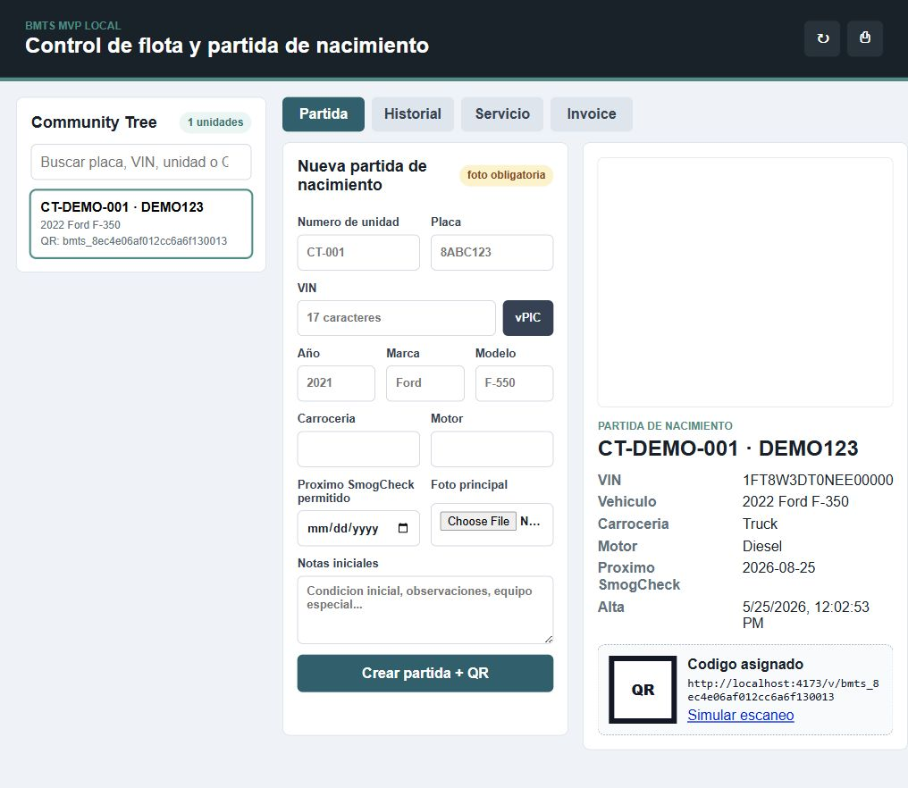
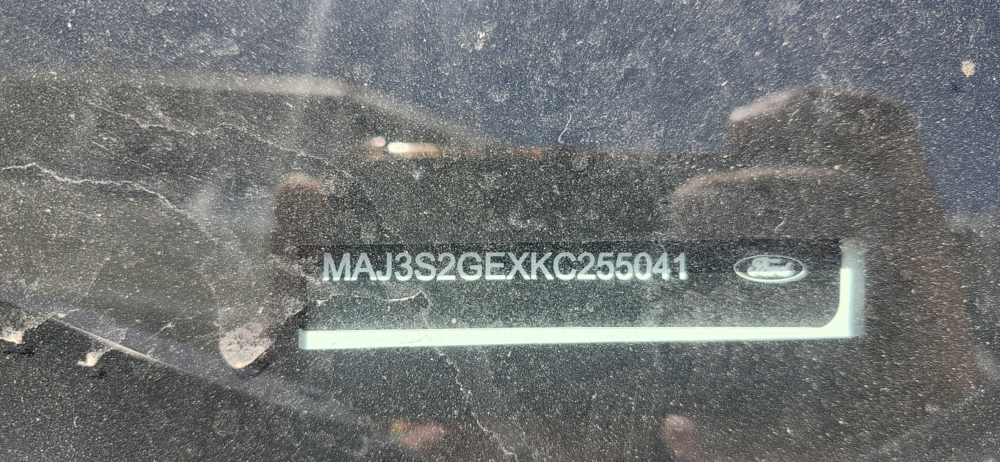

🛡️ Control de Acceso basado en Roles (RBAC)
Se ha implementado una segregación estricta de tareas operativas entre la oficina y el campo para blindar los procesos financieros de la empresa:
👤 Perfil Administrador (Beto / Oficina)
Acceso total del negocio. Es el único perfil autorizado para ver cobros, consolidar facturas en lote, modificar umbrales de SmogCheck y aprobar overrides/justificaciones.
🔧 Perfil Mecánico (Personal en Campo)
Acceso 100% operativo y seguro desde smartphones. Tienen bloqueado el acceso a pestañas de facturación (Invoice) y configuración de reglas. No pueden autorizar excepciones administrativas sin la clave de Beto.
🔑 Guía DEV de Recuperación y Backups
Copia de Seguridad de la Base de Datos: Almacenada de forma persistente en Railway en la ruta /app/data/db.json. El comando para descargar una copia local con las credenciales cifradas es:
npx.cmd railway volume files download /app/data/db.json ./backup_db.json
Auto-Sembrado de Credenciales: Si la base de datos se borra o se desea cambiar la contraseña de forma remota, el servidor re-sembrará las credenciales a partir de las variables de entorno de Railway ADMIN_DEFAULT_PASS y MECH_DEFAULT_PASS.
🔒 Diagrama de Flujo de Autenticación
El sistema utiliza almacenamiento de sesión HTTP-Only en el servidor para evitar filtraciones de tokens por XSS (Cross-Site Scripting):
⚙️ Criptografía y Seguridad en Backend
🔐 Cifrado de Contraseñas (bcryptjs)
Utilizamos bcryptjs, una biblioteca pura en Javascript que garantiza la compatibilidad multiplataforma entre el entorno local (Windows) y los contenedores de producción (Railway/Linux) sin requerir compilación de C++ nativo.
🍪 Blindaje de Cookies y CSRF
Las cookies de sesión viajan protegidas con los flags SameSite=Strict (para detener ataques de falsificación de peticiones en sitios cruzados) y Secure (para garantizar tráfico HTTPS cifrado en Railway).
🚿 Prevención de Consumo Doble de Streams
Se modificó el lector JSON del servidor readJson(req) para almacenar en caché el cuerpo leído (req.body). Esto evita errores de bloqueo o respuestas vacías cuando el cuerpo de la petición es analizado primero por el middleware y luego por la lógica del endpoint.
📁 Archivos Modificados
- app/package.json: Agregado
bcryptjscomo dependencia. - app/server.js: Implementada lógica de middleware de cookies, seeder de usuarios por defecto, e endpoints de seguridad de sesión.
- app/public/index.html: Agregado formulario de Login en overlay flotante y etiquetas de identificación de usuario en cabecera.
- app/public/styles.css: Estilos de Login y transiciones táctiles.
- app/public/app.js: Manejador de Login, Logout y filtrado dinámico de pestañas según rol.
- app/scripts/verify_security.js: Script de prueba para validar cifrado de contraseñas y denegaciones de API (401).
🕒 Bitácora de Cambios de Seguridad (2026-05-28)
401 Unauthorized del middleware del servidor. El hash de contraseñas de bcryptjs tardó 51ms, cumpliendo el umbral de seguridad.🎯 Refinamiento del Multiverse Sandbox
Se implementaron y consolidaron 4 escenarios específicos para permitir evaluar la funcionalidad del MVP por separado o en conjunto, mejorando la toma de decisiones sobre el flujo de trabajo final.
📶 Escenario A: Stickers QR y Logo de Campaña
El código QR pasó de ser un patrón fijo a un código QR dinámico real generado localmente. Incorpora el logotipo oficial de campaña de BMTS en formato vectorial puro para una resolución perfecta de impresión. Disponible en tres diseños: Racing, Clean Tech y Cockpit.
🛡️ Escenario B: Ajustes de Cumplimiento Interactivos
Los parámetros de prevención de duplicados ahora se guardan en el navegador. Un botón de simulación fuerza una advertencia de duplicado para SmogCheck de forma directa, permitiendo probar la justificación de bypass del administrador en segundos.
💼 Facturación Lote y Calibración OCR
🧾 Escenario C: Desglose y Vista Previa Premium
Al seleccionar múltiples órdenes del cliente comercial Community Tree Service, la interfaz muestra el costo detallado unitario compuesto por labor y refacciones de cada orden.
El botón de vista previa abre un modal con una factura premium Net 30. Al imprimir o guardar como PDF (Ctrl+P), los estilos de impresión ocultan la aplicación oscura para imprimir una hoja comercial limpia en blanco y negro.
🔍 Escenario D: Guías del Asistente OCR
Se integró una guía paso a paso (1, 2, 3) sobre el flujo de calibración en el formulario de carga de VIN para instruir a los mecánicos sobre el funcionamiento del asistente de comparación lado a lado con PaddleOCR.
🛠️ Nuevas Integraciones y Librerías
📶 Generación Vectorial Local (qrcode.min.js)
Para evitar dependencias de internet o CDNs externas que pongan en riesgo el trabajo en campo, se incorporó la librería local qrcode.min.js (19.9KB) en app/public/. Esta calcula la matriz de módulos y la inyecta como paths vectoriales SVG puros dentro del sticker seleccionado.
🖨️ CSS de Impresión Transaccional
Se redefinieron las reglas de impresión en styles.css para que la factura agrupada del modal #batchInvoicePreviewModal se posicione como elemento de flujo primario y oculte los menús web del fondo, evitando sangrados oscuros o colores innecesarios al imprimir en papel.
📁 Actualizaciones en la Estructura
- app/public/qrcode.min.js: Biblioteca de generación de QR local-first.
- app/public/app.js: Agregadas funciones de cálculo de subtotal consolidado, inyección de paths SVG en layouts, lógica de previsualización y listeners de impresión/cierre.
- app/public/index.html: Agregado modal de vista previa imprimible
#batchInvoicePreviewModaly bloque instructivo#ocrGuideBox. - app/public/styles.css: Estilos de impresión y modal overlay transaccionales.
🕒 Bitácora de Sandbox y Corrección (2026-05-26)
QRCode is not defined al iniciar la aplicación. Se descargó el script completo oficial de 19.9KB solucionando la carga.🎯 Objetivos y Caso de Negocio
Beto's Mobile & Truck Services (BMTS) acumula 30 años de experiencia técnica en Hollister, CA. Con el crecimiento hacia cuentas comerciales, el control manual en papel ha empezado a generar pérdidas financieras.
Dolor Operativo Principal:
- Servicios Duplicados: Pérdida de dinero y tiempo por realizar mantenimientos repetidos (especialmente inspecciones obligatorias de emisiones SmogCheck) antes del plazo normativo.
- Retraso en Reportes: La oficina se entera tarde de los trabajos realizados por los mecánicos en campo, retrasando la emisión de facturas.
- Cobros Olvidados: Labores o partes instaladas en carretera que no quedan registradas y terminan perdiéndose.
El MVP resuelve esto unificando la "Partida de Nacimiento" del vehículo con un QR de acceso inmediato y un validador estricto de duplicados en tiempo real.
👥 Roles y Responsabilidades
El MVP mapea los flujos reales de la operación familiar de BMTS:
- Administrador (Beto): Tiene visibilidad total del negocio. Es el único perfil con privilegios para aprobar una excepción de bloqueo ante una alerta de servicio duplicado.
- Personal de Oficina: Crea y gestiona la ficha maestra ("partida de nacimiento") de los vehículos, registra clientes, administra las órdenes de trabajo y genera las facturas base para contabilidad.
- Mecánico (Campo/Taller): Escanea el código QR adherido a la unidad con su smartphone para abrir de inmediato la ficha del vehículo, consultar su historial y registrar notas de partes o labor sin necesidad de papel.
- Contabilidad: Revisa invoices listos para su posterior cobro o futura exportación/sincronización con QuickBooks.
- Cliente de Flota: Cuenta con acceso simple para verificar el estado de sus unidades e historial de cumplimiento de inspecciones.
🛡️ Reglas Críticas de Negocio
Para la validación del piloto con el primer gran cliente comercial (Community Tree Service, ~200 camiones), se definieron las siguientes reglas operativas:
🚫 Bloqueo Estricto de SmogCheck
Las inspecciones de emisiones no pueden realizarse antes de los **3 meses** del servicio previo en California. El MVP bloquea la creación de una orden si detecta una coincidencia temporal. La única forma de evadir el bloqueo es con una contraseña/autorización de administrador y la captura obligatoria de la justificación técnica de la excepción.
📋 Alertas de Mantenimiento Menor
Servicios como cambio de aceite, reemplazo de frenos, servicio de grúa o asistencia en carretera arrojan avisos configurables basados en el historial del vehículo para que la oficina aconseje al cliente si un servicio no es realmente necesario todavía.
🛠️ Stack Tecnológico Detallado & Librerías
Se utiliza una arquitectura híbrida local-first que combina un servidor Node.js y un motor de inferencia de IA en Python.
💻 Entorno de Servidor (Node.js)
- Node.js (v22.22.3): Servidor nativo (`app/server.js`) utilizando módulos del núcleo de Node (`node:http`, `node:fs/promises`, `node:child_process`, `node:path`, `node:crypto`).
- MIME Types locales: Servidor estático integrado para servir `.html`, `.css`, `.js`, y archivos binarios (`.jpg`, `.png`, `.webp`, `.svg`).
- Base de Datos JSON (`app/data/db.json`): Base de datos local transaccional ligera con operaciones asíncronas de lectura/escritura (`fs.readFile`/`fs.writeFile`).
🤖 Entorno de Inferencia de IA (Python .venv)
- Python 3.12 (Virtual Environment local en `app/.venv`): Ejecución asíncrona de scripts de inferencia.
- `paddleocr==3.5.0` & `paddlepaddle==3.2.2` (CPU Version): Librerías de Deep Learning encargadas del reconocimiento de caracteres y detección de cajas de texto (PP-OCRv5).
- `numpy==2.3.5`: Manipulación matemática y procesamiento de tensores de imagen para Paddle.
- `Pillow`: Librería para manipulación de imagen, utilizada en la optimización de tamaño, formato y compresión de archivos subidos.
🔌 Integración de APIs Externas
- NHTSA vPIC API (DecodeVinValuesExtended): Consulta asíncrona mediante HTTPS (`https://vpic.nhtsa.dot.gov/api/vehicles/DecodeVinValuesExtended/{vin}?format=json`) para la extracción y decodificación de datos de homologación de vehículos en EE.UU.
📁 Inventario de Archivos del Proyecto
Estructura de archivos y funciones críticas implementadas:
- app/server.js: Orquestador del backend. Expone endpoints REST (`/api/state`, `/api/vehicles`, `/api/work-orders`, `/api/invoices`, `/api/vin-photo/recognize`). Maneja la persistencia y la llamada al script de OCR por subprocess (`spawn`).
- app/scripts/ocr_vin_paddle.py: Script en Python. Escala la imagen mediante Pillow si supera los 1500px, ejecuta `PaddleOCR` (con `use_textline_orientation=True` y `lang="en"`), aplica lógica regex `[A-HJ-NPR-Z0-9]{17}` y limpia prefijos como "VIN" o "ID" para evitar falsos positivos.
- app/public/app.js: Lógica del lado del cliente. Maneja el renderizado de la UI, el pegado de VIN, la subida de archivos Base64, y la automatización que encadena el éxito del OCR directamente con la consulta vPIC/NHTSA.
- app/public/index.html & styles.css: Interfaz de usuario del MVP diseñada con variables CSS estructuradas, layouts adaptables y controles de estado visuales.
- docs/system_contract.md: Contrato de software y reglas de negocio obligatorias del proyecto.
- docs/memoria.md & docs/implementation_log.md: Bitácoras e historial de decisiones arquitectónicas y técnicas.
🔄 Diagramas de Flujo y Pasos de Ejecución
🔄 Flujo 1: Registro con OCR y vPIC
El flujo encadenado para crear la Partida de Nacimiento funciona así:
#vehicleForm (file input) desde su smartphone o PC.Pillow la escala de forma proporcional y la guarda como JPEG con calidad 85% (~150KB).PaddleOCR (con orientación inteligente use_textline_orientation=True) detecta el texto, elimina palabras redundantes como "VIN" o "ID" y busca el patrón de 17 caracteres.200 OK con el VIN. La app web escribe el VIN en el campo de texto e invoca inmediatamente un click programático en #decodeVinBtn.🛡️ Flujo 2: Prevención de Duplicados (SmogCheck)
Mapeo de la lógica de negocio para bloquear o alertar servicios duplicados:
SmogCheck, se compara la fecha solicitada con la fecha de la propiedad nextSmogCheckDue del vehículo.409 Conflict.adminOverride y se escribe una justificación obligatoria en overrideReason, se permite el registro y se guarda la justificación para auditorías.📸 Galería de Capturas del MVP
Visualización en tiempo real del prototipo corriendo localmente y del procesamiento de imágenes en Hollister, CA. (Haz clic en cualquier captura para expandirla):


📜 Historial de Acciones y Cambios Técnicos Clave
Para lograr la estabilidad actual del prototipo, se realizaron las siguientes intervenciones clave sobre el código base original:
- Estabilización de Permisos de Caché de IA: Se detectó que el módulo `paddlex` de Python intentaba leer archivos del modelo OCR (`inference.yml`) con permisos denegados. Esto se solucionó renombrando la carpeta `.paddlex_runtime` a `.paddlex_runtime_old` y permitiendo al motor regenerarla de forma limpia con los permisos del usuario de Windows activo.
- Manejo de Errores Robustos en API: Anteriormente, si PaddleOCR se ejecutaba con éxito pero no encontraba ningún patrón de VIN en la foto, el script devolvía `ok: false` y terminaba con código `3`. El backend de Node.js trataba cualquier código de salida no-cero como un error del servidor, respondiendo con un error de red `501 (Not Implemented)`. Se modificó `server.js` para capturar el código `3` como una ejecución exitosa de OCR (sin fallas de dependencias) y responder `200 OK` con un mensaje descriptivo en el JSON (`No se detectó un VIN de 17 caracteres...`) para que la UI lo maneje con gracia.
- Bug de Normalización del VIN: Se solucionó un bug donde la función `clean_vin` de Python limpiaba los caracteres especiales y eliminaba la letra "I" del texto. Al procesar el prefijo `"VIN 1FT8..."`, la palabra `"VIN"` se transformaba en `"VN"` y se adhería al código del VIN, corrompiendo los primeros dígitos y eliminando los últimos dos caracteres del número original para acomodarse al tamaño de 17. Se añadió una regla regex con límites de palabra (`\bVIN\b`, `\bID\b`) para remover los prefijos antes de normalizar y limpiar los caracteres.
📈 Hitos de Desarrollo del Proyecto
| Código Hito | Descripción del Entregable | Estado Actual | Criterio de Validación |
|---|---|---|---|
| H-0.1 | Documentación básica del MVP (Contrato, Alcance, Memoria) | Completada | Contrato firmado en borrador y memoria actualizada. |
| H-0.2 | Descubrimiento Técnico & Validación del Piloto | Iniciada | Beto y la oficina definen los campos exactos del taller. |
| H-0.3 | Prototipo Navegable Local (Node Server, Local JSON DB) | Completada | El MVP carga en local (`http://localhost:4173`), permite crear unidades, QR, SmogCheck y facturas base. |
| H-0.4 | Base de Datos y Autenticación Multi-Rol | Iniciada | Migración a PostgreSQL/Prisma y creación de logins reales. |
| H-0.5 | Módulos de Integración (OCR, vPIC, PDF) | Iniciada | PaddleOCR funcionando local-first en fotos reales de smartphone. NHTSA cargando de forma asíncrona. |
🕒 Bitácora de Estabilización (2026-05-25)
BMTS_Design_Directions.html e integró la plantilla de stickers QR físicos con remaches y franjas de seguridad.📖 Resumen Histórico V0.1
Este es el borrador inicial y ejecutivo del reporte del proyecto al inicio de la jornada de planificación del 2026-05-25.
El proyecto BMTS busca convertir el conocimiento operativo del taller en un sistema digital simple, confiable y escalable. La primera etapa debe enfocarse en flotas, historial vehicular, prevención de duplicados, órdenes de trabajo e invoice básico.
📋 Versiones Autograduadas Iniciales
| Versión | Estado Inicial | Entrega Esperada | Criterio De Aprobación Original |
|---|---|---|---|
| 0.1 Documentación | Iniciada | README, memoria, contrato, preguntas, MVP scope | El equipo puede explicar el sistema sin depender de la reunión original. |
| 0.2 Descubrimiento Validado | Pendiente | Respuestas a preguntas pre-MVP, flujo real confirmado y habilidades aplicadas | Beto/oficina confirman pasos, roles y reglas de duplicado. |
| 0.3 Prototipo Navegable | Iniciada | App local en carpeta app con base JSON y flujo navegable | Calvin ya cargó el MVP en navegador local. Usuario puede recorrer cliente, vehículo, QR, historial, orden, duplicado e invoice. |
| 0.4 MVP Funcional | Pendiente | Base de datos, auth, CRUD, órdenes, historial y duplicados | Demo con una flota real y una alerta de duplicado realista. |
| 0.5 Integraciones | Pendiente | OCR, SMS/email, pagos, QuickBooks o exportación | BMTS reduce trabajo manual sin perder control. |
🔍 Hallazgos Iniciales
- El mayor riesgo operativo es repetir servicios o no cobrar a tiempo.
- La primera versión debe capturar el proceso real antes de automatizarlo demasiado.
- El sistema debe separar información interna de información visible para cliente.
- Los agentes de IA serán más útiles después de tener datos consistentes.
- El ZIP de habilidades confirma soporte para producto, Next.js, React Native, seguridad, accesibilidad y ejecución por planes.
- QuickBooks queda fuera del MVP inicial, pero debe contemplarse en el modelo para integración futura.
- SmogCheck será la primera regla fuerte: advertir y bloquear si se intenta antes de la fecha permitida de 3 meses, con autorización de admin para excepciones.
- La foto del vehículo será obligatoria durante el alta de la partida de nacimiento y se almacenará localmente en el MVP.
- Cada vehículo tendrá un QR único vinculado a la base local para abrir ficha, historial y carga de servicio mediante escaneo.
- El MVP local ya fue abierto exitosamente en `http://localhost:4173/` y se guardo captura para Remotion.
- La consulta vPIC/NHTSA por VIN ya está conectada y autollenando datos técnicos ampliados en la partida de nacimiento.
- Se agregó pegado, normalización, validación y foto local del VIN para reducir errores de captura.
- PaddleOCR fue aceptado como OCR provisional open source para leer VIN desde foto; Google Vision queda como alternativa futura.
- PaddleOCR quedó instalado localmente y el endpoint OCR ya leyó correctamente un VIN sintético completo; el flujo mantiene confirmación humana antes de consultar vPIC.